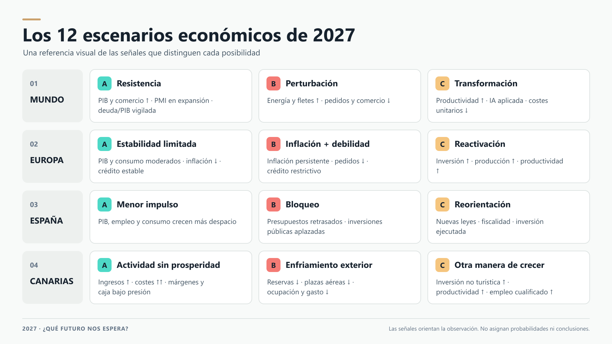

Artículo de análisis · Noviembre de 2026
2027: ¿Qué futuro nos espera?
Las previsiones económicas nos hablan del futuro. ¿Pero estamos prestando atención a las señales del presente?
Estamos acostumbrados a que, cuando se aproxima un nuevo año, los organismos internacionales publiquen sus previsiones económicas. Cuánto crecerá el PIB, cómo evolucionará la inflación, qué sucederá con los tipos de interés o qué perspectivas tendrán las empresas.
Y nosotros las leemos, las comentamos y, en ocasiones, terminamos incorporándolas a nuestras decisiones como si describieran un futuro que ya estuviese escrito.
Pero ¿qué ocurre cuando cambian las circunstancias que sustentan esas previsiones?
Llevamos años comprobando que la economía mundial puede continuar creciendo a pesar de las tensiones geopolíticas, los conflictos comerciales y unos niveles de endeudamiento extraordinariamente elevados.
Según el Fondo Monetario Internacional, la deuda pública y privada mundial superaba el 235 % del PIB en 2024. Una cifra que, por sí sola, no explica el origen del crecimiento económico, pero que invita a plantearnos una cuestión.
¿Estamos ante una economía verdaderamente sólida o ante una economía que necesita recurrir continuamente a la financiación y al endeudamiento para mantener su crecimiento?
Y si dirigimos nuestra mirada hacia Europa, aparece otra contradicción. ¿Por qué una economía puede mantener cierta estabilidad y, sin embargo, encontrar tantas dificultades para recuperar competitividad?
En España, las perspectivas económicas para 2027 incorporan además una nueva variable: las decisiones políticas y presupuestarias que puedan adoptarse después de las elecciones generales del 29 de noviembre de 2026.
Pero donde estas cuestiones adquieren una dimensión especialmente cercana es en Canarias.
Nuestra economía puede mantener niveles elevados de actividad turística y, sin embargo, eso no significa necesariamente que todas las empresas estén mejorando su rentabilidad ni que el crecimiento se traduzca en una mayor prosperidad.
¿Puede una economía crecer sin resolver los desequilibrios que limitan su desarrollo? ¿Y durante cuánto tiempo?
Estas son algunas de las cuestiones que articulan el seminario «2027: ¿Qué futuro nos espera?», organizado por ECN Business School.
La propuesta no consiste en adivinar lo que sucederá, sino en recorrer cuatro ámbitos —el mundo, Europa, España y Canarias— y explorar tres posibles escenarios económicos en cada uno.
Pero hay una cuestión que considero todavía más importante: identificar las señales que podrían ayudarnos a reconocer cuál de esos escenarios comienza a materializarse.
Porque una previsión puede equivocarse. Y no necesariamente porque estuviera mal elaborada, sino porque las condiciones que la sustentaban han cambiado.
El problema aparece cuando seguimos utilizando esa previsión como si nada hubiera sucedido.
Radar Económico 2027: de las previsiones a las señales
Con ese propósito hemos preparado el Radar Económico 2027, una herramienta de consulta que reúne los principales indicadores relacionados con los doce escenarios de la conferencia.
La herramienta está organizada en cuatro ámbitos económicos y permite conocer qué señales debemos vigilar, por qué son relevantes y dónde podemos consultar los datos originales.
Incluye fuentes como el Fondo Monetario Internacional, el Banco Central Europeo, Eurostat, el INE, el Banco de España y el ISTAC, entre otras.
No pretende anticipar el futuro ni sustituir el análisis económico. Su finalidad es mucho más sencilla: facilitar que cada lector pueda observar cómo evolucionan las condiciones económicas y extraer sus propias conclusiones.
Porque quizás el verdadero desafío de 2027 no sea acertar lo que va a suceder.
Quizás sea reconocer a tiempo cuándo está dejando de suceder aquello que esperábamos.
Consulta el Radar Económico 2027
Explora los doce escenarios económicos, descubre qué indicadores conviene vigilar y accede a sus fuentes originales para realizar tu propio análisis.

Herramienta de consulta
Radar Económico 2027
Selecciona un ámbito y uno de sus tres escenarios para consultar los indicadores, comprender por qué resultan relevantes y acceder a las fuentes originales.
El Radar no ofrece conclusiones automáticas, probabilidades ni recomendaciones económicas o de inversión. Las conclusiones corresponden exclusivamente al visitante.
Una señal aislada puede advertir de un cambio. Varias señales coherentes y persistentes permiten analizar con mayor fundamento la evolución económica. Los enlaces se comprobaron el 21 de noviembre de 2026; algunos portales pueden requerir aceptar cookies, ejecutar un visor o disponer de suscripción.